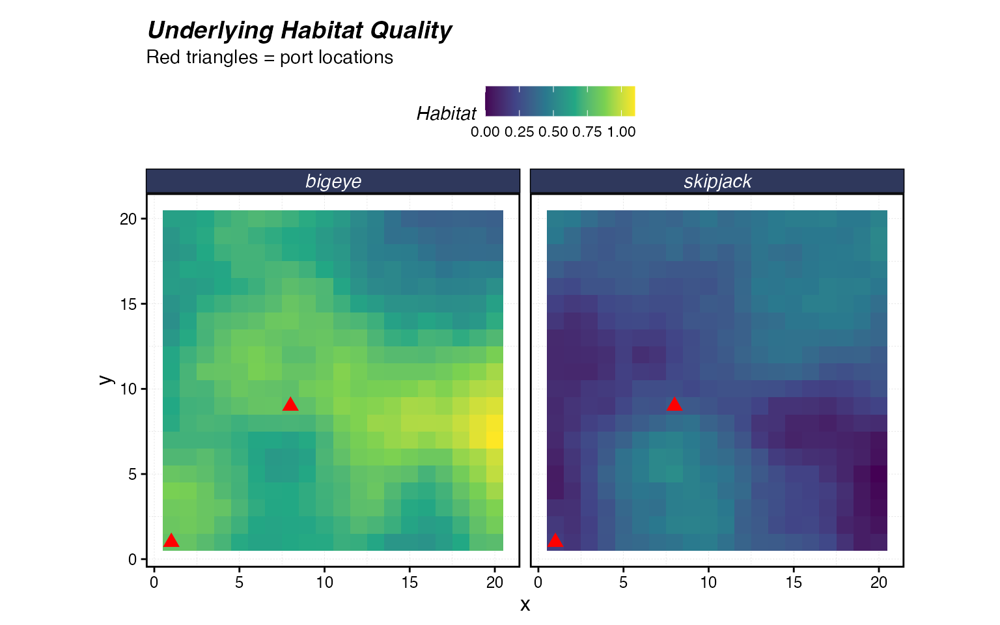
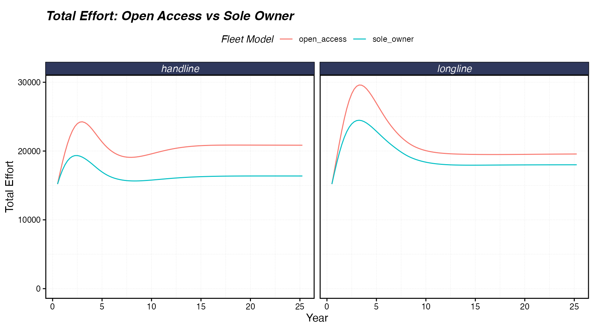
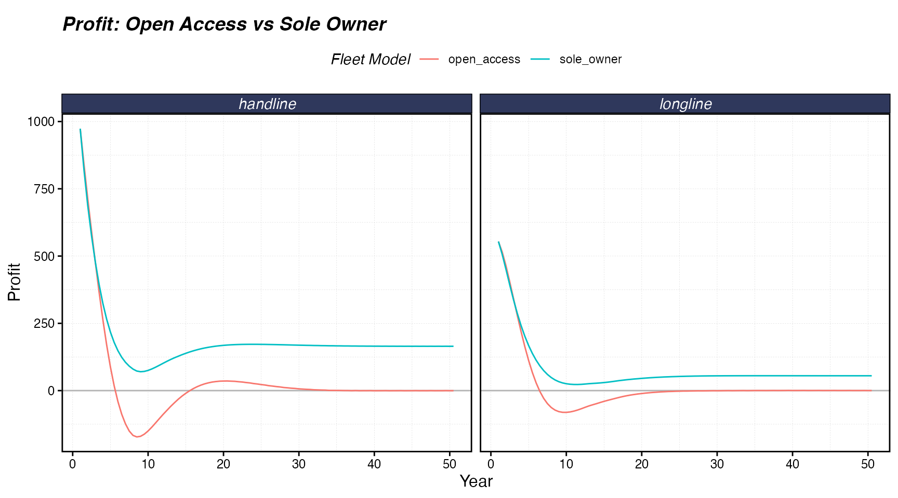
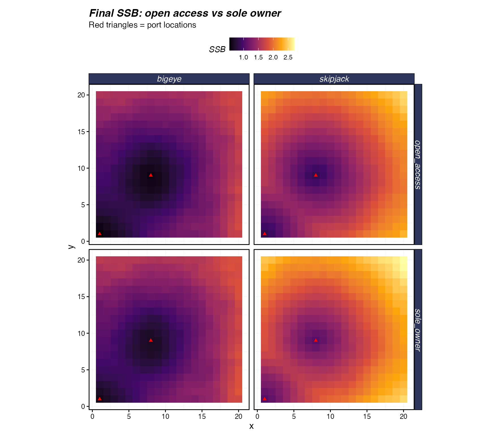
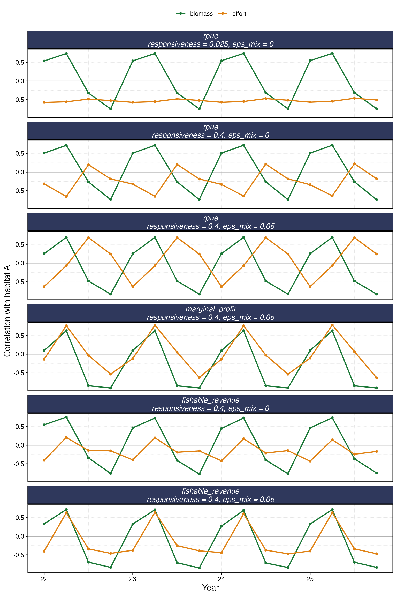
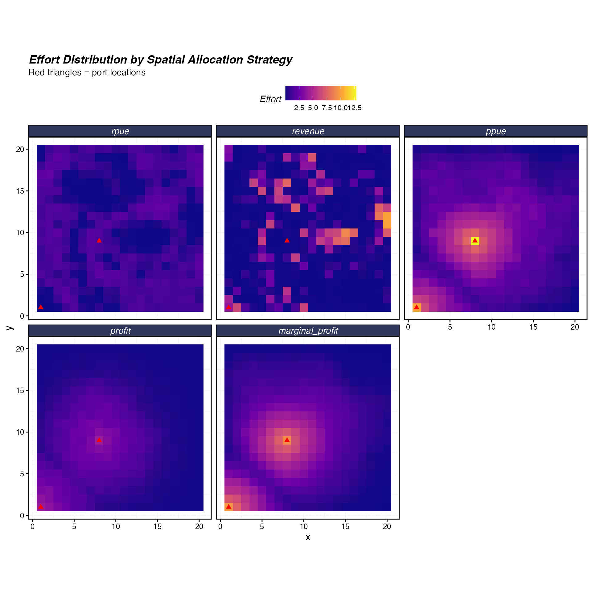
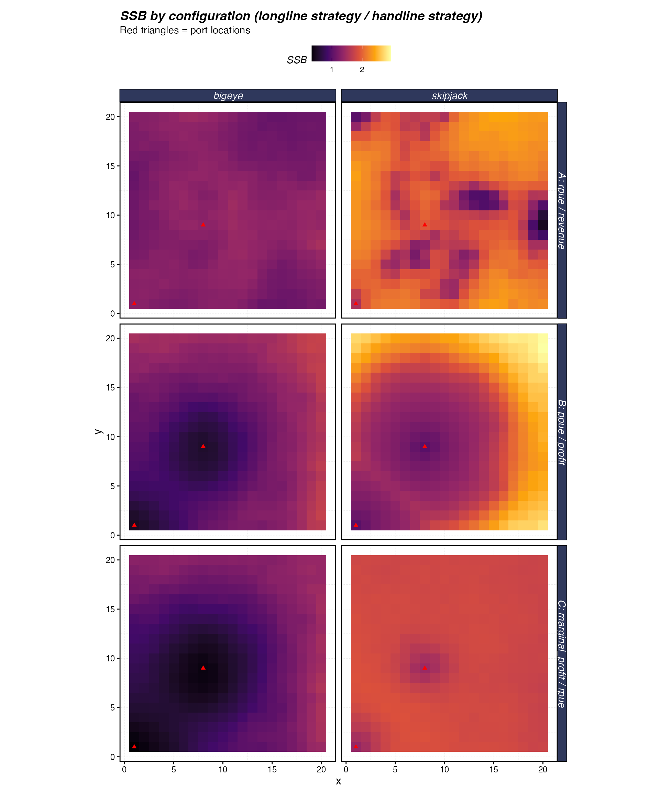
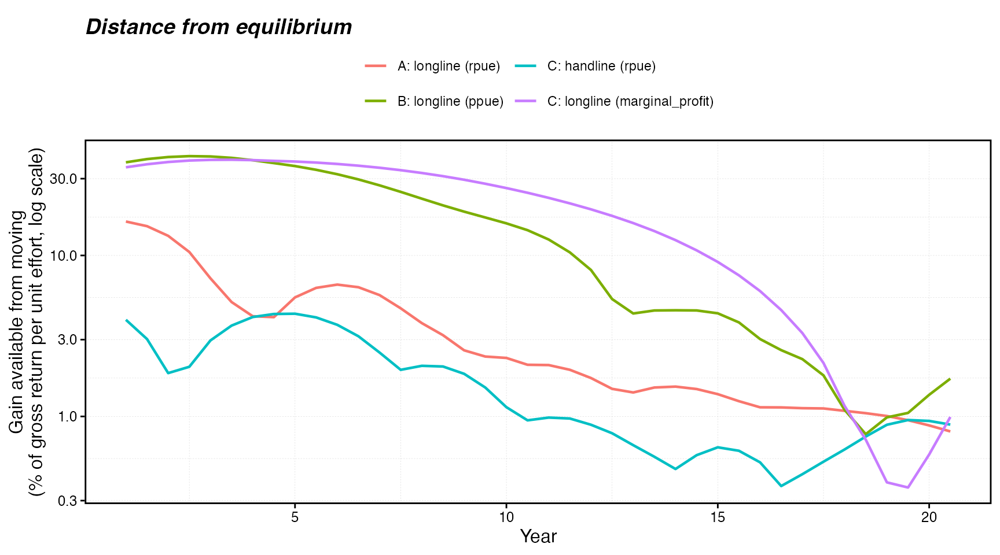

Spatial Allocation Strategies
Source:vignettes/articles/spatial-allocation.Rmd
spatial-allocation.RmdEvery time step, each fleet in marlin decides how much
effort to deploy (fleet_model) and where to deploy it
(spatial_allocation). This vignette is about where.
spatial_allocation sets the signal a fleet uses to rank
patches, and different signals give very different maps of effort, and
so of where each species is fished down.
The options are not a ranking from crude to realistic. They are a menu of models people actually use: effort that follows catch or catch per unit effort, their revenue and profit versions, a marginal refinement, and a few others. Each has stories that can justify it, such as a sole owner piling effort where the profits are, or competing vessels spreading out until catch rates even out, but none maps one-to-one onto a real fishery.
The first half of the vignette explains how the allocator works, how the objectives differ, and where effort ends up. Two controlled comparisons follow: open access vs sole owner (Scenario 1), and fish that move every season (Scenario 2). The last section is a use case that gives each fleet in a shared fishery its own strategy.
How spatial allocation works
Effort moves a little each step
A fleet does not solve for its best map of effort. Each step it moves
some effort out of patches that scored below average on its objective
and into patches that scored above average (responsiveness
sets how much), then fishes, and the fish are caught, grow, recruit and
move. The map of effort in any run is the product of many rounds of this
loop, not of one decision. So a strategy’s behaviour depends on how its
objective responds to effort over many steps, and effort takes several
steps, often a few years, to settle after a disturbance such as the
start of a run or an MPA closure.
The update rule, step by step
For each fleet, with total effort already set by the fleet model:
-
Flat check. If the range of the objective across
open patches is less than 0.1% of its median
(
flatness_tol), effort is spread evenly and the remaining steps are skipped. - Standardise. Each patch’s objective becomes a -score, , using the median absolute deviation (floored at 1% of the median), clipped to with . Closed patches get . So do patches where a per-unit-effort objective is undefined because the fleet did not fish there; they are left out of the median and scale.
- Centre. . Patches with gain a share of effort, and those with lose one.
-
Multiplicative update.
,
where
is
responsiveness(default 0.025). Closed patches get zero. -
Exploration mixing (optional). With
eps_mix, .
Properties of the update
- Total effort is conserved exactly, so only the fleet model changes how much effort there is.
- Moves are gradual and do not depend on units. A patch’s push depends on how it compares with the other patches, not on the currency. In one step, the effort in one patch can change relative to another by at most a factor of , about 1.28 at the defaults.
- There is no target map. The allocator never computes where effort should end up; it only moves effort toward higher-scoring patches, step after step.
-
A patch at zero effort stays at zero, because the
update multiplies. A small
eps_mix(0.01–0.05) keeps every open patch above zero, so the fleet can return when a patch improves. This matters most for the objectives with little or no crowding within a step (the totals andfishable_revenue), which concentrate effort hardest. A per-unit-effort objective also loses sight of a patch at zero effort;fishable_revenuedoes not, but its recovery is just as slow.
How the objectives differ
The objectives differ in when they are measured, how they respond to effort piling into a patch, and how they treat other fleets.
Realised vs prospective objectives
The realised objectives (rpue,
revenue, ppue, profit,
cpue, catch) are records of fishing that has
already happened: the catch, revenue and cost each fleet earned in each
patch last step. A fleet placing effort at step
is responding to step
.
The prospective objectives are calculated from the
biomass the coming step will fish. The marginal objectives
(marginal_profit, marginal_revenue) ask what
one more unit of effort in each patch would add, at the fleet’s current
map of effort; calc_marginal_value() answers this with
finite differences on go_fish().
fishable_revenue is the value of the fish the fleet could
catch in each patch: biomass at age × vulnerability at age × price,
summed over species (calc_fishable_revenue()).
The one-step lag rarely matters when the distribution of fish changes
more slowly than the time step. When it shifts on about the time step,
as with seasonal migration, a fleet on a realised objective always
arrives where the fish were, and raising responsiveness
only makes it chase harder (Scenario 2). Where habitat is stable, a
higher responsiveness helps effort settle faster.
What stops effort piling into one patch
Crowding, within a step. Each extra unit of effort
in a patch catches less than the one before, because the catch equation
removes fish as fishing goes on and other fleets take a share.
Per-unit-effort and marginal objectives therefore fall as effort rises,
and push back straight away, though only gently if one step removes
little of a patch’s fish. Total catch and
revenue still rise with effort, so within a step they
reward concentration. profit is in between, because its
costs rise faster than effort, and fishable_revenue ignores
effort altogether.
Depletion, across steps. Fishing a patch leaves less
biomass there for later steps, which lowers every objective in the
patch, the totals and fishable_revenue included. How hard
this bites depends on how fast fish refill the patch, by moving in or by
growth and recruitment.
So every strategy is penalised for concentrating, but on different
timescales, and the totals and fishable_revenue rely on
depletion alone (configuration A of the use case shows how slow that can
be).
How the objectives account for other fleets
Fleets fishing the same patch add up their fishing mortality and split the catch in proportion to it. So other fleets lower your catch within the step, and deplete the patch for later steps.
- Realised objectives already contain the other fleets’ effort, because they record what each fleet earned when all of them fished together. They make no prediction, but acting on last step’s outcome is an implicit bet that the next step, including where the other fleets fish, will look the same.
-
Marginal objectives make that bet explicitly.
calc_marginal_value()raises one fleet’s effort while holding the other fleets’ maps fixed, and measures the change in that fleet’s own return. Each fleet ignores the catch its extra effort takes from the others, so several marginal fleets together put more effort into shared patches than a single owner of all of them would. -
fishable_revenueignores other fleets within the step; they matter only through the fish they remove.
No strategy anticipates how the other fleets will respond. All of them react to the current state at once, and again in the next step.
Optional: smoothing the objective over time
(memory_halflife)
Rebuilding the objective from scratch each step can produce a
period-2 sawtooth when a fleet is tightly coupled to the biomass it
fishes, most often with the marginal objectives, or with cost-aware ones
after an MPA closure: the signal points at a patch, fishing drains it,
and the next signal points away. memory_halflife (in years)
damps this by replacing
with an exponentially weighted average of its past values, updated only
in open patches:
Smoothing adds a lag of roughly
years, so a long half-life swaps a fast sawtooth for slow overshoot, and
on a prospective objective it puts back some of the lag that objective
avoids. If you need it, 0.5–1.5 years suits most fisheries; if a run is
already smooth, leave it at 0. The
spatial-allocation-memory article has a worked example.
Where effort ends up
Resting states and Nash equilibrium
Resting states. The update stops moving a fleet’s effort only when its objective is equal in every patch holding effort, and no open patch left unfished scores higher. What that means depends on the objective:
- Per-unit-effort objectives: average returns are equal across the patches being fished. This is the ideal free distribution (IFD), and it fits most cleanly with a story of competing vessels, each going where its own catch rate is best.
- Marginal objectives: the return on the last unit of effort is equal across fished patches. For a fleet fishing alone, that maximises its profit (or revenue) within the step, a story of one owner coordinating every vessel, or of one vessel dividing its fishing time. Average returns are generally not equal.
-
Total objectives and
fishable_revenue: every fished patch yields the same long-run total, or holds the same fishable revenue, reached only through depletion. The totals fit most cleanly with a story of a single owner piling effort where the returns are. Because the push-back is slow, their maps can stay patchy for a long time.
Nash equilibrium. In a Nash equilibrium, no player
can do better by changing what it does, given what the others do.
“Better” is judged by an objective, and in marlin that is
whatever spatial_allocation says: a profit
fleet, for example, is in equilibrium when no patch offers it more total
profit than the ones it is fishing. A resting state is exactly that
condition, with no gradient left to chase, so a fleet that comes to rest
is at a Nash equilibrium for its objective. With several fleets, the
joint resting state is one in which no fleet has a gradient left. (The
update is a discrete-time version of the replicator dynamics of
evolutionary game theory, for which this is a standard result.) No fleet
solves for the equilibrium; repeated steps are how the game is played
out.
When repeated play gets there. It reaches the equilibrium, or comes close to it, when:
- the environment is stable on the timescale effort takes to settle, so habitat neither shifts as fast as the time step (Scenario 2) nor keeps drifting;
- concentrating effort eventually lowers the objective, through crowding or depletion (the push-back is weakest for totals on stocks that refill a patch fast);
-
responsivenessis small enough not to overshoot, although small steps are slow: at the default of 0.025, the cost-aware fleets in the use case took 15–20 years to get close; - an abandoned open patch that improves can draw effort back, which a
small
eps_mixensures. Closed patches such as MPAs are simply not part of the game; the equilibrium is conditional on them.
Even then, the result is Nash in spirit rather than in precise
definition. Effort gets close and then wobbles around the equilibrium
(see “How close repeated play gets to equilibrium” in the use case), and
eps_mix leaves a small floor of effort everywhere. It is
also a one-step, myopic equilibrium, as the next section explains.
Adaptive fleets, not forward-looking optimisers
What marlin does not implement is the economist’s
optimisation benchmark: fleets that maximise the discounted value of
their profit over the whole future, knowing exactly how today’s fishing
changes the stock and how the other fleets will respond. For a single
owner, the long-run target of that problem is MEY, the effort that
maximises long-run profit (at a zero discount rate; with discounting,
the owner fishes harder). With several fleets, it is a dynamic game.
marlin’s fleets are adaptive instead, for two reasons.
Solving the forward-looking problem for a spatial, age-structured,
multispecies model is out of computational reach for routine simulation.
And real fleets mostly learn from recent returns rather than plan with
perfect knowledge, so an adaptive fleet is a different, often more
plausible, model of behaviour, not a flawed version of the
optimiser.
The cost is that marlin does not give you the fully
informed optimum as a benchmark. Repetition makes fleets feel
depletion, but nothing makes them weigh it: no fleet asks
whether fishing less now would pay off later. As a result:
- the equilibria reached are one-step equilibria, at whatever biomass the run settles to (the usual sense of the IFD in fisheries models);
- maximising marginal profit does not automatically reach MEY:
marginal_profitandfleet_model = "sole_owner"act as a myopic sole owner, settling below open-access effort but above MEY effort, and closer to MEY the less one step’s fishing changes the future stock; - several fleets on marginal objectives reach, at best, a one-step Nash equilibrium.
If a question needs the fully informed benchmark, such as the effort that achieves MEY, compute it separately, for example from a grid of constant-effort runs.
The objectives at a glance
Realised objectives use the previous step’s fishing, prospective ones
use the biomass about to be fished, and manual and
uniform use no objective.
spatial_allocation |
Objective | Computed from | Behaviour |
|---|---|---|---|
rpue |
Revenue per unit effort | Last step’s revenue ÷ effort | Falls as effort is added, so concentration limits itself; tends toward the IFD on gross returns. No costs. |
revenue |
Total revenue | Last step’s revenue | Rises with effort within a step, so effort reinforces itself until depletion pushes back. No costs. |
ppue |
Profit per unit effort | Last step’s (revenue − cost) ÷ effort | As rpue, net of operating and travel costs; tends
toward the IFD on profit. |
profit |
Total profit | Last step’s revenue − cost | As revenue, net of costs; costs rising faster than
effort add some brake within a step. |
cpue |
Catch per unit effort | Last step’s catch ÷ effort | As rpue, by weight. |
catch |
Total catch | Last step’s catch | As revenue, by weight. |
marginal_profit |
Marginal profit | Profit from one more unit of effort (finite difference), on the biomass about to be fished | A refinement of profit: tends toward equal marginal
profit, maximising the fleet’s profit within each step (a myopic sole
owner), taking other fleets’ effort as given. Slower to compute (see Runtime). |
marginal_revenue |
Marginal revenue | As above, for revenue | As marginal_profit, without costs. |
fishable_revenue |
Fishable revenue | Biomass at age × vulnerability × price, on the biomass about to be fished | Tracks standing stock. Cheap and defined everywhere, but with no
crowding, costs or other fleets within a step. Pair it with a small
eps_mix (see “Properties of the update”). |
manual |
User weights | fishing_grounds$fishing_ground |
Held in proportion to the weights. |
uniform |
None | — | Equal effort in every open patch. |
The shared two-species, two-fleet system
Scenario 1 and the use case share a 20 × 20 grid with two species, bigeye and skipjack tuna, that prefer different parts of the grid, and two fleets, longline and handline, that sail from ports at (1, 1) and (8, 9). The far corner is a long way from either port, which matters for any strategy that counts costs.
library(marlin)
library(ggplot2)
library(dplyr)
library(tidyr)
theme_set(marlin::theme_marlin(base_size = 12) +
theme(legend.position = "top"))
resolution <- c(20, 20)
patches <- prod(resolution)
years <- 20
seasons <- 2
time_step <- 1 / seasons
# Two ports, both toward the lower left of the grid
ports <- data.frame(x = c(1, 8), y = c(1, 9))Habitat
sim_habitat() generates spatially correlated habitat. A
negative correlation between the species makes them prefer different
areas, so no patch is best for both.
# Negative correlation: species prefer different areas
critter_correlations <- matrix(c(1, -0.5,
-0.5, 1), nrow = 2)
habitats <- sim_habitat(
critters = c("bigeye", "skipjack"),
kp = 0.1,
critter_correlations = critter_correlations,
resolution = resolution,
patch_area = 1,
output = "list"
)
# Extract the habitat matrices
bigeye_habitat <- habitats$critter_distributions$bigeye
skipjack_habitat <- habitats$critter_distributions$skipjack
# Quick look at the generated habitats
habitat_df <- expand_grid(critter = c("bigeye", "skipjack"),
x = 1:resolution[1],
y = 1:resolution[2]) |>
arrange(critter, x, y) |>
mutate(
habitat = c(as.vector(bigeye_habitat),
as.vector(skipjack_habitat))
)
ggplot(habitat_df) +
geom_tile(aes(x, y, fill = habitat)) +
geom_point(data = ports, aes(x, y),
color = "red", size = 3, shape = 17) +
scale_fill_viridis_c(option = "D") +
facet_wrap(~critter) +
coord_equal() +
labs(title = "Underlying Habitat Quality",
subtitle = "Red triangles = port locations",
fill = "Habitat")
Fauna
Bigeye start more depleted than skipjack (spawning biomass at 50% of unfished, against 60%) and have the larger adult home range (5 against 3).
fauna <-
list(
"bigeye" = create_critter(
common_name = "bigeye tuna",
habitat = list(bigeye_habitat),
season_blocks = list(1:seasons),
adult_home_range = 5,
recruit_home_range = 10,
density_dependence = "local_habitat",
seasons = seasons,
depletion = 0.5,
init_explt = 0.2,
explt_type = "f",
resolution = resolution,
steepness = 0.6,
ssb0 = 1000
),
"skipjack" = create_critter(
scientific_name = "Katsuwonus pelamis",
habitat = list(skipjack_habitat),
season_blocks = list(1:seasons),
adult_home_range = 3,
recruit_home_range = 8,
density_dependence = "local_habitat",
seasons = seasons,
depletion = 0.6,
init_explt = 0.15,
explt_type = "f",
resolution = resolution,
steepness = 0.7,
ssb0 = 800
)
)Fleets
build_fleets() builds both fleets for any pair of
spatial_allocation settings. By default the longline fleet
is open access and the handline fleet has constant effort. The fleets
also differ in several other ways:
-
Travel costs: travel makes up 70% of longline costs
and 50% of handline costs (
travel_fraction). -
Species: the longline fleet takes the larger share
of bigeye fishing mortality, and the handline fleet the larger share of
skipjack (
p_explt). - Prices: the handline fleet gets 8 for skipjack against 5 for longline; both get 10 for bigeye.
- Selectivity: it differs for both species.
So their maps would differ even under the same strategy.
build_fleets <- function(longline_allocation, handline_allocation,
longline_fleet_model = "open_access",
handline_fleet_model = "constant_effort") {
fleets <- list(
"longline" = create_fleet(
list(
"bigeye" = Metier$new(
critter = fauna$bigeye,
price = 10,
sel_form = "logistic",
sel_start = 1,
sel_delta = 0.01,
catchability = 0,
p_explt = 2
),
"skipjack" = Metier$new(
critter = fauna$skipjack,
price = 5,
sel_form = "logistic",
sel_start = 0.8,
sel_delta = 0.1,
catchability = 0,
p_explt = 1
)
),
ports = ports,
base_effort = patches,
resolution = resolution,
spatial_allocation = longline_allocation,
fleet_model = longline_fleet_model,
cr_ratio = 1,
travel_fraction = 0.7
),
"handline" = create_fleet(
list(
"bigeye" = Metier$new(
critter = fauna$bigeye,
price = 10,
sel_form = "logistic",
sel_start = 1.2,
sel_delta = 0.1,
catchability = 0,
p_explt = 1
),
"skipjack" = Metier$new(
critter = fauna$skipjack,
price = 8,
sel_form = "logistic",
sel_start = 0.5,
sel_delta = 0.2,
catchability = 0,
p_explt = 2
)
),
ports = ports,
base_effort = patches,
resolution = resolution,
spatial_allocation = handline_allocation,
fleet_model = handline_fleet_model,
cr_ratio = 1,
travel_fraction = 0.5
)
)
fleets <- tune_fleets(fauna, fleets, tune_type = "depletion")
fleets
}Scenario 1: open access vs sole owner
Both fleets allocate on ppue in both runs; only the
fleet model differs. Open access adds effort until average profit is
zero. fleet_model = "sole_owner" uses the same entry and
exit machinery, but responds to the effort-weighted mean of patch-level
marginal profit from calc_marginal_value(), so it stops
adding effort when the next unit no longer pays within the step. That
makes it a myopic sole owner (see “Adaptive fleets, not forward-looking
optimisers”): it settles below open-access effort with a positive
profit, but in general above MEY effort. The two fleet sets are built
separately, because fleet objects share state, and run for 50 years so
that both can settle.
fleets_oa <- build_fleets("ppue", "ppue",
longline_fleet_model = "open_access",
handline_fleet_model = "open_access")
fleets_so <- build_fleets("ppue", "ppue",
longline_fleet_model = "sole_owner",
handline_fleet_model = "sole_owner")
years_long <- 50
time_oa <- system.time({
sim_oa <- simmar(fauna = fauna, fleets = fleets_oa, years = years_long)
})
time_so <- system.time({
sim_so <- simmar(fauna = fauna, fleets = fleets_so, years = years_long)
})
proc_oa <- process_marlin(sim_oa, time_step = time_step)
proc_so <- process_marlin(sim_so, time_step = time_step)
effort_ts <- bind_rows(
proc_oa$fleets |>
group_by(step, fleet) |>
summarise(effort = sum(effort), .groups = "drop") |>
mutate(model = "open_access"),
proc_so$fleets |>
group_by(step, fleet) |>
summarise(effort = sum(effort), .groups = "drop") |>
mutate(model = "sole_owner")
)
ggplot(effort_ts, aes(step * time_step, effort, color = model)) +
geom_line() +
facet_wrap(~fleet) +
scale_x_continuous(name = "Year") +
scale_y_continuous(name = "Total Effort", limits = c(0, NA)) +
labs(title = "Total Effort: Open Access vs Sole Owner",
color = "Fleet Model")
The sole owner settles at lower effort than open access in both
fleets. process_marlin() does not report profit, so it is
read from the raw output: each species’ prof_p_fl is that
species’ revenue minus its share of the fleet’s costs, so a fleet’s
profit is the sum over species and patches.
fleet_profit <- function(sim, model_label) {
step_profits <- lapply(names(sim), function(step_name) {
profit_p_fl <- Reduce(`+`, lapply(names(fauna), function(critter) {
sim[[step_name]][[critter]]$prof_p_fl
}))
tibble(
step_name = step_name,
fleet = colnames(profit_p_fl),
profit = colSums(profit_p_fl)
)
})
# simmar() names each step "year_season"
bind_rows(step_profits) |>
separate_wider_delim(step_name, delim = "_", names = c("year", "season")) |>
mutate(
step = as.numeric(year) + (as.numeric(season) - 1) * time_step,
model = model_label
)
}
profit_ts <- bind_rows(
fleet_profit(sim_oa, "open_access"),
fleet_profit(sim_so, "sole_owner")
)
ggplot(profit_ts, aes(step, profit, color = model)) +
geom_hline(yintercept = 0, color = "grey70") +
geom_line() +
facet_wrap(~fleet) +
scale_x_continuous(name = "Year") +
labs(title = "Profit: Open Access vs Sole Owner",
color = "Fleet Model",
y = "Profit")
Open-access profit falls to about zero, while the sole owner keeps a positive profit and, because it fishes less, leaves more biomass in the water:
bind_rows(
proc_oa$fauna |>
filter(step == max(step)) |>
mutate(model = "open_access"),
proc_so$fauna |>
filter(step == max(step)) |>
mutate(model = "sole_owner")
) |>
group_by(model, critter, x, y) |>
summarise(ssb = sum(ssb, na.rm = TRUE), .groups = "drop") |>
ggplot() +
geom_tile(aes(x, y, fill = ssb)) +
geom_point(data = ports, aes(x, y),
color = "red", size = 1.5, shape = 17) +
scale_fill_viridis_c(option = "B") +
facet_grid(model ~ critter) +
coord_equal() +
labs(
title = "Final SSB: open access vs sole owner",
subtitle = "Red triangles = port locations",
fill = "SSB"
)
Scenario 2: fish that move every season
Scenario 1 and the use case have static habitat. Here the habitat flips quickly, which is where the one-step lag of the realised objectives matters. On a 5 × 10 grid with four seasons a year, the fish prefer one end of the grid in seasons 1–2 (habitat A) and the mirror-image end in seasons 3–4, so each habitat lasts two steps. Recruitment habitat is flat, so the only spatial pattern in the fish is the seasonal one.
flip_resolution <- c(5, 10)
flip_seasons <- 4
flip_years <- 25
# marlin reads a habitat matrix with row 1 = the top of the map, while
# expand_grid() runs y from the bottom up, hence arrange(desc(y)) before reshaping
to_habitat_matrix <- function(habitat_df) {
habitat_df |>
arrange(desc(y)) |>
pivot_wider(names_from = x, values_from = habitat) |>
select(-y) |>
as.matrix()
}
habitat_a <- expand_grid(x = 1:flip_resolution[1], y = 1:flip_resolution[2]) |>
mutate(
habitat = dnorm(x^2 + y^2, 300, 100),
habitat = habitat / max(habitat) * 5
) |>
to_habitat_matrix()
# the exact mirror image of habitat A
habitat_b <- (max(habitat_a) + min(habitat_a)) - habitat_a
flat_recruit_habitat <- habitat_a
flat_recruit_habitat[!is.na(flat_recruit_habitat)] <- 1
habitat_to_df <- function(habitat_matrix, label) {
as.data.frame(habitat_matrix) |>
mutate(y = n():1) |>
pivot_longer(-y, names_to = "x", values_to = "habitat") |>
mutate(
x = match(x, unique(x)),
habitat_name = label
)
}
yellowfin <- create_critter(
query_fishlife = FALSE,
scientific_name = "Thunnus albacares",
m = 0.3,
linf = 100,
vbk = 0.2,
t0 = -0.5,
max_age = 15,
age_mature = 3,
weight_a = 4e-5,
weight_b = 2.86,
steepness = 0.9,
habitat = list(habitat_a, habitat_b),
season_blocks = list(c(1, 2), c(3, 4)),
recruit_habitat = flat_recruit_habitat,
adult_home_range = 10,
recruit_home_range = 10,
depletion = 0.4,
density_dependence = "pre_dispersal",
seasons = flip_seasons,
init_explt = 0.2,
explt_type = "f"
)One longline fleet fishes this stock under six settings:
rpue at the default responsiveness (0.025) and
at 0.4 (16 times the default, so effort can move a long way within a
two-step habitat), with and without eps_mix = 0.05;
fishable_revenue at 0.4, with and without
eps_mix; and marginal_profit at 0.4 with
eps_mix.
run_flip <- function(spatial_allocation, responsiveness, eps_mix) {
flip_fleets <- list(
"longline" = create_fleet(
metiers = list(
"yellowfin" = Metier$new(
critter = yellowfin,
price = 10,
sel_form = "logistic",
sel_start = 0.1,
sel_delta = 0.01,
catchability = 0,
p_explt = 1
)
),
base_effort = prod(flip_resolution),
resolution = flip_resolution,
spatial_allocation = spatial_allocation,
responsiveness = responsiveness,
eps_mix = eps_mix
)
)
flip_fleets <- tune_fleets(fauna = list("yellowfin" = yellowfin), fleets = flip_fleets)
flip_proc <- process_marlin(
sim = simmar(
fauna = list("yellowfin" = yellowfin),
fleets = flip_fleets,
years = flip_years
),
time_step = 1 / flip_seasons,
keep_age = FALSE
)
patch_biomass <- flip_proc$fauna |>
group_by(step, x, y) |>
summarise(biomass = sum(b), .groups = "drop")
patch_effort <- flip_proc$fleets |>
group_by(step, x, y) |>
summarise(effort = sum(effort), .groups = "drop")
# biomass at step t is the biomass that step t's effort fishes
left_join(patch_effort, patch_biomass, by = c("step", "x", "y")) |>
arrange(x, y, step) |>
group_by(x, y) |>
mutate(biomass_last_step = dplyr::lag(biomass)) |>
ungroup() |>
mutate(
spatial_allocation = spatial_allocation,
responsiveness = responsiveness,
eps_mix = eps_mix
)
}
flip_settings <- tibble(
spatial_allocation = c("rpue", "rpue", "rpue",
"fishable_revenue", "fishable_revenue", "marginal_profit"),
responsiveness = c(0.025, 0.4, 0.4, 0.4, 0.4, 0.4),
eps_mix = c(0, 0, 0.05, 0, 0.05, 0.05)
)
flip_runs <- bind_rows(
lapply(seq_len(nrow(flip_settings)), function(i) {
run_flip(
spatial_allocation = flip_settings$spatial_allocation[i],
responsiveness = flip_settings$responsiveness[i],
eps_mix = flip_settings$eps_mix[i]
)
})
) |>
mutate(
setting = paste(spatial_allocation, responsiveness, eps_mix, sep = "_"),
scenario = paste0(
spatial_allocation, "\nresponsiveness = ", responsiveness,
", eps_mix = ", eps_mix
)
)
scenario_order <- flip_runs |>
distinct(spatial_allocation, responsiveness, eps_mix, scenario) |>
arrange(desc(spatial_allocation), responsiveness, eps_mix) |>
pull(scenario)Each line below shows how closely one step’s map of biomass or effort matches habitat A, over the last three years. Biomass swings between strongly positive and strongly negative as the habitat flips, and a fleet tracking the fish should swing with it.
habitat_a_df <- habitat_to_df(habitat_a, "A") |>
select(x, y, habitat)
flip_runs |>
filter(step >= flip_years - 3) |>
pivot_longer(cols = c(effort, biomass), names_to = "map", values_to = "value") |>
left_join(habitat_a_df, by = c("x", "y")) |>
group_by(scenario, map, step) |>
summarise(cor_with_habitat_a = cor(value, habitat), .groups = "drop") |>
mutate(scenario = factor(scenario, levels = scenario_order)) |>
ggplot(aes(step, cor_with_habitat_a, color = map)) +
geom_hline(yintercept = 0, color = "grey70") +
geom_line(linewidth = 0.8) +
geom_point(size = 1.2) +
facet_wrap(~scenario, ncol = 1) +
scale_color_manual(values = c(biomass = "#1b7837", effort = "#e08214")) +
labs(
x = "Year",
y = "Correlation with habitat A",
color = NULL
)
# for the prose below: across patches, how well does each step's effort line up
# with the biomass it fished, and with the biomass the step before fished?
# (averaged over the last two years)
flip_alignment <- flip_runs |>
filter(step >= flip_years - 2, !is.na(biomass_last_step)) |>
group_by(setting, step) |>
summarise(
this_step = cor(effort, biomass),
last_step = cor(effort, biomass_last_step),
.groups = "drop"
) |>
group_by(setting) |>
summarise(
this_step = mean(this_step),
last_step = mean(last_step),
.groups = "drop"
)
this_step_cor <- setNames(round(flip_alignment$this_step, 2), flip_alignment$setting)
last_step_cor <- setNames(round(flip_alignment$last_step, 2), flip_alignment$setting)
collapsed_patches <- flip_runs |>
filter(step == max(step)) |>
group_by(setting) |>
summarise(collapsed = sum(effort / sum(effort) < 1e-3), .groups = "drop")
collapsed_patches <- setNames(collapsed_patches$collapsed, collapsed_patches$setting)Under rpue, effort is a step behind the fish. At the
default responsiveness it barely moves; at 0.4 it swings,
but toward where the fish were. Averaged over the last two years, the
correlation across patches between effort and the biomass it is fishing
is -0.27, against 0.39 with the biomass the step before fished. Adding
eps_mix does not change that (-0.29 and 0.45), because the
problem is when the signal was measured.
Both prospective objectives with eps_mix move with the
fish: fishable_revenue at 0.56 against 0.39, and
marginal_profit at 0.61 against 0.38. In the step right
after a flip, effort is still only partway to the new pattern, because
each step the map moves only part of the way toward a current signal.
Without eps_mix, fishable_revenue tracks the
fish only weakly (0.18 against 0.21). With no crowding, its effort piles
into a few patches, and by the final step 7 of the 50 patches hold less
than 0.1% of it, too little to recover before the next flip.
So when fish move on about the time step, use a prospective objective
with a small eps_mix: marginal_profit if the
fleet’s economics matter (at extra computational cost), or
fishable_revenue if “effort follows the fish” is enough. If
the fleet should behave as competing vessels (the IFD), only the
realised objectives give that, lag included, and the lag matters little
when habitat moves slowly.
Use case: a different strategy for each fleet
Real applications usually have several fleets, each with its own
settings. Here build_fleets() gives the two fleets
different strategies in three configurations:
-
A: longline on
rpue, handline onrevenue; -
B: longline on
ppue, handline onprofit; -
C: longline on
marginal_profit, handline onrpue.
These are not controlled comparisons of strategies. The fleets differ in more than their objective (see “Fleets”), so each map reflects the fleet as well as its strategy.
fleets_a <- build_fleets("rpue", "revenue")
fleets_b <- build_fleets("ppue", "profit")
fleets_c <- build_fleets("marginal_profit", "rpue")
time_a <- system.time({
sim_a <- simmar(fauna = fauna, fleets = fleets_a, years = years)
})
time_b <- system.time({
sim_b <- simmar(fauna = fauna, fleets = fleets_b, years = years)
})
time_c <- system.time({
sim_c <- simmar(fauna = fauna, fleets = fleets_c, years = years)
})
proc_a <- process_marlin(sim_a, time_step = time_step)
proc_b <- process_marlin(sim_b, time_step = time_step)
proc_c <- process_marlin(sim_c, time_step = time_step)Effort and SSB in the three configurations
Final-step effort for each fleet, on a shared colour scale:
extract_effort <- function(sim, fleet_name, label) {
final_step <- sim[[length(sim)]]
effort_vec <- final_step[[1]]$e_p_fl[, fleet_name]
expand_grid(x = 1:resolution[1], y = 1:resolution[2]) |>
mutate(
effort = effort_vec,
strategy = label
)
}
all_efforts <- bind_rows(
extract_effort(sim_a, "longline", "A: longline, rpue"),
extract_effort(sim_a, "handline", "A: handline, revenue"),
extract_effort(sim_b, "longline", "B: longline, ppue"),
extract_effort(sim_b, "handline", "B: handline, profit"),
extract_effort(sim_c, "longline", "C: longline, marginal_profit"),
extract_effort(sim_c, "handline", "C: handline, rpue")
) |>
mutate(strategy = factor(strategy, levels = unique(strategy)))
ggplot(all_efforts) +
geom_tile(aes(x, y, fill = effort)) +
geom_point(data = ports, aes(x, y),
color = "red", size = 2, shape = 17) +
scale_fill_viridis_c(option = "C") +
facet_wrap(~strategy, ncol = 2) +
coord_equal() +
labs(
title = "Effort by fleet and strategy, configurations A–C",
subtitle = "Red triangles = port locations",
fill = "Effort"
)
And the resulting SSB:
extract_ssb <- function(proc, longline_alloc, handline_alloc) {
last_step <- max(proc$fauna$step)
proc$fauna |>
filter(step == last_step) |>
group_by(critter, x, y) |>
summarise(ssb = sum(ssb, na.rm = TRUE), .groups = "drop") |>
mutate(strategy = paste0(longline_alloc, " / ", handline_alloc))
}
all_ssb <- bind_rows(
extract_ssb(proc_a, "A: rpue", "revenue"),
extract_ssb(proc_b, "B: ppue", "profit"),
extract_ssb(proc_c, "C: marginal_profit", "rpue")
)
ggplot(all_ssb) +
geom_tile(aes(x, y, fill = ssb)) +
geom_point(data = ports, aes(x, y),
color = "red", size = 1.5, shape = 17) +
scale_fill_viridis_c(option = "B") +
facet_grid(strategy ~ critter) +
coord_equal() +
labs(
title = "SSB by configuration (longline strategy / handline strategy)",
subtitle = "Red triangles = port locations",
fill = "SSB"
)
-
A. The longline fleet (
rpue) spreads its effort widely, while the handline fleet (revenue) piles its effort into scattered single patches. It fishes those patches down (the pockets of low skipjack SSB), but after 20 years that has not evened out its map. Neither objective counts costs, so neither map follows the ports. -
B. The longline fleet (
ppue) clusters around both ports and leaves the far edges lightly fished, where skipjack build up. The handline fleet (profit) responds to distance much more weakly, partly because travel is a smaller share of its costs. -
C. The longline fleet
(
marginal_profit) has the smoothest, most port-centred surface, and bigeye are depleted most around the ports. The handline fleet (rpue) fishes the outer ring instead, likely because longline has fished bigeye down near the ports. A fleet’s map depends on the other fleets as well as on its own settings.
patch_returns <- function(sim, step_index, fleet_name) {
step_out <- sim[[step_index]]
sum_over_critters <- function(element) {
Reduce(`+`, lapply(names(fauna), function(critter) {
step_out[[critter]][[element]][, fleet_name]
}))
}
effort <- step_out[[1]]$e_p_fl[, fleet_name]
tibble(
effort_share = effort / sum(effort),
rpue = sum_over_critters("r_p_fl") / effort,
ppue = sum_over_critters("prof_p_fl") / effort
)
}
# marginal values at the biomass and effort of one step, other fleets held fixed
patch_marginals <- function(sim, step_index, fleet_name, fleets) {
step_out <- sim[[step_index]]
marginals <- calc_marginal_value(
e_p_fl = as.matrix(step_out[[1]]$e_p_fl),
fauna = fauna,
n_p_a = setNames(lapply(names(fauna), function(critter) {
step_out[[critter]]$n_p_a
}), names(fauna)),
fleets = fleets
)
tibble(
marginal_revenue = marginals$mr_p_fl[, fleet_name],
marginal_profit = marginals$mp_p_fl[, fleet_name]
)
}
# deviation of each patch from the fleet's effort-weighted average, as a
# fraction of the fleet's effort-weighted gross return on the same footing
relative_deviation <- function(value, gross, effort_share) {
(value - sum(effort_share * value)) / sum(effort_share * gross)
}
final_index <- length(sim_a)
rpue_fleet <- patch_returns(sim_a, final_index, "longline")
ppue_fleet <- patch_returns(sim_b, final_index, "longline")
marginal_fleet <- bind_cols(
patch_returns(sim_c, final_index, "longline"),
patch_marginals(sim_c, final_index, "longline", fleets_c)
)
equalised <- bind_rows(
rpue_fleet |>
mutate(
panel = "A: longline on rpue\nrevenue per unit effort",
deviation = relative_deviation(rpue, rpue, effort_share)
),
ppue_fleet |>
mutate(
panel = "B: longline on ppue\nprofit per unit effort",
deviation = relative_deviation(ppue, rpue, effort_share)
),
marginal_fleet |>
mutate(
panel = "C: longline on marginal_profit\nmarginal profit",
deviation = relative_deviation(marginal_profit, marginal_revenue, effort_share)
),
marginal_fleet |>
mutate(
panel = "C: longline on marginal_profit\nprofit per unit effort",
deviation = relative_deviation(ppue, rpue, effort_share)
)
) |>
mutate(panel = factor(panel, levels = unique(panel)))How close repeated play gets to equilibrium
The next figure tracks, through time, the most an average unit of a
fleet’s effort could gain by moving to the fleet’s best patch, as a
percentage of its gross return per unit effort; zero would be an exact
equilibrium. Configuration C’s handline fleet (rpue) is
included, so both players of a two-fleet game are shown.
# the most an average unit of effort could gain by moving to the best patch,
# as a fraction of the fleet's gross return per unit effort
nash_gap <- function(value, gross, effort_share) {
(max(value, na.rm = TRUE) - sum(effort_share * value)) / sum(effort_share * gross)
}
# simmar() names each step "year_season"
step_years <- sapply(strsplit(names(sim_a), "_"), function(year_season) {
as.numeric(year_season[1]) + (as.numeric(year_season[2]) - 1) * time_step
})
gap_paths <- bind_rows(lapply(seq_along(sim_a), function(step_index) {
s1_longline <- patch_returns(sim_a, step_index, "longline")
s2_longline <- patch_returns(sim_b, step_index, "longline")
s3_longline <- bind_cols(
patch_returns(sim_c, step_index, "longline"),
patch_marginals(sim_c, step_index, "longline", fleets_c)
)
s3_handline <- patch_returns(sim_c, step_index, "handline")
tibble(
year = step_years[step_index],
fleet = c(
"A: longline (rpue)",
"B: longline (ppue)",
"C: longline (marginal_profit)",
"C: handline (rpue)"
),
gap = c(
nash_gap(s1_longline$rpue, s1_longline$rpue, s1_longline$effort_share),
nash_gap(s2_longline$ppue, s2_longline$rpue, s2_longline$effort_share),
nash_gap(s3_longline$marginal_profit, s3_longline$marginal_revenue,
s3_longline$effort_share),
nash_gap(s3_handline$rpue, s3_handline$rpue, s3_handline$effort_share)
)
)
}))
final_gaps <- gap_paths |>
filter(year == max(year)) |>
pull(gap)
# the same measure over the 50-year open-access run of Scenario 1 (both fleets on ppue),
# to see whether the gap keeps shrinking or levels off
long_run_years <- sapply(strsplit(names(sim_oa), "_"), function(year_season) {
as.numeric(year_season[1]) + (as.numeric(year_season[2]) - 1) * time_step
})
long_run_gaps <- unlist(lapply(which(long_run_years >= 20), function(step_index) {
sapply(c("longline", "handline"), function(fleet_name) {
fleet_returns <- patch_returns(sim_oa, step_index, fleet_name)
nash_gap(fleet_returns$ppue, fleet_returns$rpue, fleet_returns$effort_share)
})
}))
ggplot(gap_paths, aes(year, 100 * gap, color = fleet)) +
geom_line(linewidth = 0.8) +
scale_y_log10() +
guides(color = guide_legend(ncol = 2)) +
labs(
title = "Distance from equilibrium",
x = "Year",
y = "Gain available from moving\n(% of gross return per unit effort, log scale)",
color = NULL
)
All four gaps shrink, from as much as 38% in the first year to
between 0.8% and 1.7% by year 20, but not to zero. In the 50-year
open-access run of Scenario 1 (both fleets on ppue), the
gap stays between 0.3% and 2.2% from year 20 to year 50: play gets close
to the equilibrium and then wobbles around it. The best remaining
patches are fished ones slightly above average, not abandoned ones, so
these are approximate Nash equilibria rather than traps, and in
configuration C both fleets get there together. Convergence is slow,
though: the cost-aware fleets take 15–20 years at the default
responsiveness. All of this is with static habitat.
Runtime
The marginal objectives and sole_owner need
calc_marginal_value() every step, which adds at least one
extra go_fish() evaluation per fleet, so they run
slower:
runtime <- tibble(
scenario = c("A: rpue / revenue", "B: ppue / profit", "C: marginal_profit / rpue",
"Scenario 1: open_access (ppue)", "Scenario 1: sole_owner (ppue)"),
seconds = c(time_a["elapsed"], time_b["elapsed"], time_c["elapsed"],
time_oa["elapsed"], time_so["elapsed"]),
years_run = c(rep(years, 3), years_long, years_long)
) |>
mutate(
ms_per_year = 1000 * seconds / years_run,
relative = round(ms_per_year / min(ms_per_year), 1),
ms_per_year = round(ms_per_year, 1)
)
knitr::kable(runtime,
col.names = c("Scenario", "Seconds", "Years", "ms per simulated year", "Relative to fastest"),
digits = 2,
caption = "Wall-clock time for simmar() by scenario. Time per simulated year adjusts for the different run lengths.")| Scenario | Seconds | Years | ms per simulated year | Relative to fastest |
|---|---|---|---|---|
| A: rpue / revenue | 0.12 | 20 | 6.2 | 1.2 |
| B: ppue / profit | 0.10 | 20 | 5.0 | 1.0 |
| C: marginal_profit / rpue | 0.30 | 20 | 15.2 | 3.0 |
| Scenario 1: open_access (ppue) | 0.25 | 50 | 5.1 | 1.0 |
| Scenario 1: sole_owner (ppue) | 0.81 | 50 | 16.1 | 3.2 |
Choosing a strategy
None of the options is the realistic one; pick the one whose story
best fits the fleet being modelled, or compare several. As a rough
guide: total objectives for a fleet that goes where the catch is;
per-unit-effort objectives for competing vessels (the IFD); marginal
objectives for a fleet run as one business; and
fishable_revenue, with a small eps_mix, when
effort should simply follow the fish. The fleet model is a separate
choice that sets how much effort there is to allocate. See the
port-distance and fleet-management vignettes
for how these options interact with other marlin features,
and spatial-allocation-memory for
memory_halflife.